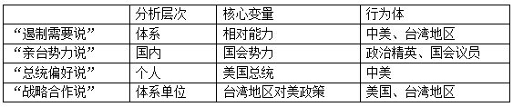
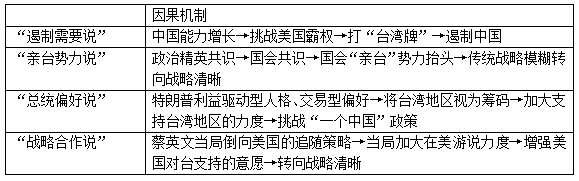
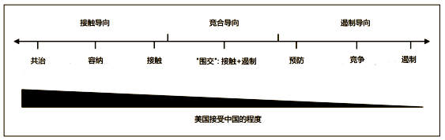
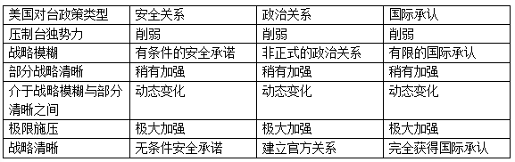
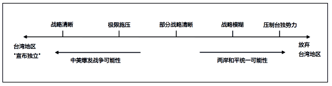
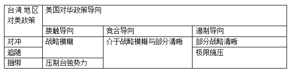
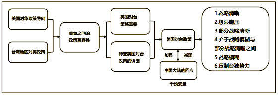
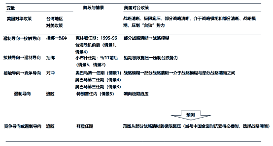

收录于合集

从战略模糊到极限施压？解开后冷战时期美国对台政策的逻辑
**
**
作者： 叶晓迪 ，广东外语外贸大学国际关系学院讲师、云山青年学者。研究领域为中美关系、美国涉台政策。在 International Affairs, Journal of Chinese Political Science, The China Review, Journal of Asian and African 和《当代亚太》、《台湾研究集刊》等SSCI与CSSCI刊物发表论文20多篇，并有多篇相关报告被中央和省委相关单位采用。
编译： 曾庆鸣（国政学人编译员，南开大学周恩来政府管理学院硕士生）
来源： Ye X. From Strategic Ambiguity to Maximum Pressure? Explaining the Logic of the US Taiwan Policy in the Post-Cold War Era. Journal of Asian and African Studies , 2022, pp.1-33.
导读
美国对台政策如何逐步变化？这些变化背后的逻辑是什么？为了解决这些问题，学界对此形成了四种不同解释的流派。然而既有研究存在将战略模糊与战略清晰这两个概念单向二分化的不足，因而未能找到能够解释美国对台政策长期演变轨迹的因果机制。本文通过设置三个关键指标并对美国对台政策进行重新分类，打破了传统的战略模糊- 战略清晰二分法，并认为美国对华政策导向和台湾地区对美政策是引发变化的两大因素。本文将以上两大因素作为自变量，用接触导向、竞合导向、遏制导向和对冲/追随/捆绑分别对其进行概念化和操作化。本文构建了一项系统性的理论框架，以展示美国对台政策如何在战略清晰、极限施压、介于部分清晰和战略模糊之间、战略模糊和压制“台独”势力之间转化。本文通过对冷战后美国历届政府对台政策的变迁进行实证研究，以展示该理论框架如何在现实政治中运作。
摘要
台湾问题是中美关系中最为重要、最为敏感的议题。中美建交以来，美国长期奉行对台战略模糊。这种对台战略模糊既可以对大陆形成威慑，又可以避免陷入台海军事冲突。然而，自奥巴马总统第二任期以来，美国对台政策从长期战略模糊逐步转入战略清晰的轨道，最终在特朗普总统时期（2017-2021）转向极限施压。美国对台政策的转变构成了几个重要的问题： 一是为什么美国一改其传统的对台政策？二是美国对台政策转变背后的逻辑是什么？三是美国对台政策的转变是如何逐步发生的？
本文旨在构建后冷战时期美国对台政策逻辑的分析框架，由此选取了美国对华政策导向作为第一项自变量，通过划分接触导向、竞合导向、遏制导向进行自变量的概念化和操作化。台湾地区的对美政策作为第二项自变量操作化为对冲政策、追随政策和捆绑政策。本文提出美国对华政策导向和台湾地区对美政策是美国对台政策发生转变的两大主要因素，推动美国对台政策呈现多种形态，包括：战略清晰、极限施压、部分清晰与介于战略模糊和部分战略清晰之间、战略模糊、压制“台独”势力。
本文由几部分组成：首先是批判性的文献回顾部分，指出既有文献的不足；其次是基于文献回顾，构建一项针对后冷战时期美国对台政策演变逻辑的新分析框架；运用过程追踪法对后冷战时期美国历届政府对台政策转变进行实证研究，以此考察分析框架和因果机制的有效性。最后，本文针对拜登政府的对台政策做出了政策性前瞻。
01
** 美国对台政策转变的既有研究** ****
有关美国对台政策转变的讨论，既有研究形成了四种不同解释的流派：第一种解释认为美国对台政策转变是出于遏制中国崛起的策略需要；第二种解释认为这种政策转变是美国国会亲台势力促成的结果；第三种解释认为对台政策转变由不同总统对台的不同偏好导致；第四种解释认为政策转变是由台湾地区与美国的战略合作导致的。
1. “遏制需要说”：美国对台政策转变出于遏制中国崛起的策略需要
此流派持有这样一种基本论调，即美国的对台政策是遏制中国崛起不可或缺的一部分。从地缘政治视角而言，台湾地区在美国对华遏制策略中扮演重要角色，因为一旦两岸统一后中国将突破“第一岛链”的封锁，进而持续削弱美国在亚太地区的地缘政治支配地位。另一方面，台湾地区在美国亚太同盟体系中地位比较重要，因此一旦美国减弱了对台湾地区的安全承诺，那些指望着通过美国遏制中国的亚洲国家会认为美国战略信誉受损。
2. “亲台势力说”：美国对台政策转变是美国国会“亲台”势力促成的结果
除了在国家战略层次进行分析以外，有些研究关注美国国会内影响对台政策转变的驱动性因素。自2016年以来迅速恶化的中美关系及两岸关系使得美国国会具有更大动机通过更多涉台法案，因此形成了美国政府转变其传统对台政策的国内推动力。美国国会内不断抬头的“亲台势力”试图通过推行对台军售、法律上确认对台“六项保证”、结成“准军事联盟”等措施将“一个中国”概念变成一纸空文。
3. “总统偏好说”：美国对台政策转变由不同总统对台的不同偏好导致
此类解释将对台政策转变归因于不同总统具有不同的个性和偏好。例如，特朗普具有的利益驱动型、经济民族主义情绪以及交易型人格形塑了他处理对华关系时“达成交易式”的路径。正是受其个性和偏好影响，特朗普认为台湾问题是对华谈判，尤其是在“公平贸易”谈判中讨价还价的重要筹码，因此在其任上有意地打“台湾牌”。
4. “战略合作说”：美国对台政策转变是由台湾地区与美国的战略合作导致的
这类解释强调了蔡英文当局在推动美国一改其传统对台政策过程中的重要角色。为了推动这一转变，蔡英文当局倒向了追随策略，即从政治、经济、军事上将台湾地区捆绑到美国印太战略中。为了获取美国进一步支持，蔡英文当局通过不断削弱“九二共识”这一两岸关系最重要的政治基础以协同特朗普遏制中国大陆的举措。
为了更好地了解既有研究，本文总结了这些研究中的一些标准，包括研究的分析层次、核心变量、行为体，以及因果机制。
表1既有研究总结
 
来源：作者制作
02
** 美国对华政策的概念化与操作化** ****
美国对华政策的概念化按照如下方式进行：美国作为霸权国采取一系列策略措施以阻止或迟滞中国这样一个国际体系内现有霸权潜在挑战国的迅速崛起。

图一：美国对华政策的主要导向（作者制作）
为了清楚地展现美国对华政策的三个主要导向，首先需要精准定义这几个导向：
第一， 接触导向政策本质上基于“接触”的目的，即美国政府通过将中国纳入现有国际秩序以鼓励中国成为国际秩序内的温和行为体（benign actor）并与美国共建和平与繁荣的双边伙伴关系。 根据这一定义，接触向政策广泛囊括从接触、容纳（accommodate）到共治（shared governance）的几种策略选择。
第二， 遏制导向政策根源于使用除战争外一切手段限制对手权力扩张的遏制策略。 冷战时期乔治·凯南对于美国使用军事、经济、意识形态对抗苏联的建议被广泛认为是一种遏制策略。根据这一定义，遏制向政策包含预防、竞争与遏制。
第三， 竞合导向政策意味着同时存在竞争与合作，两国之间在一些领域合作而在另一些领域竞争。 由竞合思维引导下的美国政府采取了接触加遏制的对华围交政策，这样能够增加美国总体经济与军事实力，同时通过政治与文化交流增强对华区域合作。
03
** 台湾地区对美政策的概念化与操作化** ****
本文对台湾地区对美政策的定义为：台当局根据中美关系的变化态势所做出的政策选择。
基于现实政治与后冷战时期历史经验，本文区分了三种台湾地区对美政策的不同类型：对冲、追随与捆绑。对冲通常意味着台当局试图通过多种政策选择在中美之间寻求合适位置以减少高度不确定性。追随是与制衡相对立的概念，意味着弱势方倒向强势方并与之联合，而非与其他弱势方联合制衡强势方。捆绑是指弱势方能够影响强势方并使之做出有利于弱势方的行为。
04
重新分类美国对台政策：超越战略清晰/模糊二分法
数十年来，“战略模糊”与之相对应的“战略清晰”一直是美国对台政策的关键维度。然而，近期两岸关系愈发不稳定的方向发展，使得许多美国学者敦促美国政府对台做出更清晰、更坚定的安全承诺，使得美国对台政策转向“战略清晰”。 这一转变引发了对本文关键论点的辩论：美国对台政策能被简单地二元化为战略清晰与模糊吗？ 为此我们必须回顾战略清晰/模糊的定义。
总的来说，战略模糊可定义为美国保留对台军事有条件的承诺、非官方往来、和有限的国际的承认。相应地，作为战略模糊的对立概念，战略清晰意味着美国政府转而向台当局提供无条件安全承诺并允许台湾地区通过建立与美国官方政治关系获得“法理独立”。
然而这种二分法也有缺陷，二分法制造了两种极端的情况：美国政府要么完全遵守“一个中国政策”，要么完全打破一个中国政策。这种极端的推论形塑了美国政学界对台战略清晰与模糊“二者取其一”（either- or choice）的思路。战略清晰和战略模糊是整个对台政策光谱上的极点，如果我们将战略清晰向战略模糊移动，对台政策的强度会经历连续不断的变化，反之亦然。因此这种二分法可能忽略几种重要的策略选择。在现实政治中，两种相互矛盾的策略也可以被同时运用，类似的混合策略对于决策者和策略制定者来说是一种普遍选择。因此政策制定者经常选择“二者兼得”（both- and）而非“二者取其一”，大多数二分法忽视了运用混合策略的可能。
为避免上述问题，本文试图通过设置多个关键指标评估美国对台政策的具体强度，以求打破传统的战略清晰- 模糊二分法不足。通过以战略模糊/清晰作为基准，将安全关系、政治关系和国际承认作为三个关键指标，本文将以上三个指标操作化为三个层次：削弱、稍有加强和极大加强。 由此将美国对台政策重新分类为：压制台独势力、战略模糊、部分战略清晰、介于战略模糊与部分清晰之间、极限施压及战略清晰。
表2美国对台政策的重新分类

来源：作者制作
压制“台独”势力 ：即美国政府重申提供安全承诺的条件是不宣布独立，拒绝台当局的政治诉求并削弱有限国际承认，导致三项关键指标的降低；
部分战略模糊 ：即美国政府强调台湾地区的安全角色，稍微提升美台政治关系并有限地提升其国际承认，使得美国对台政策稍有加强；
介于战略模糊与部分模糊之间 ：并非是一个固定概念，但反映出美国对台政策随着美国对华政策的调整而转变的过程，进入了动态变化的状态。
极限施压 ：即美国政府加强对台军事承诺并时常展现出对台提供军事支持的意愿，同时升级美台政治联系为官方关系，极大加强台湾地区的国际承认度。需要注意的是，极限施压并没有达到战略清晰的程度和强度。极限施压通过象征性或实质性提升台湾地区战略价值的同时避免卷入与中国大陆直接军事冲突，以此最大化战略压力。

图二：美国对台政策的范围
05
** 理论框架及其因果机制** ****
本文依托对上述两个关键自变量的概念化和操作化过程，将变量组合成一个3×3矩阵，并根据矩阵得出美国对台政策相关的九种情景。本文通过逻辑压缩和经验压缩的方法重组解释模型。台湾地区对美选择对冲与追随本质上是符合美国利益并遵循美国策略设计的合作行为，因此可压缩至同一单元格。通过压缩单元格可将九个情景减少到五个，以简化理论构建和经验观察。
表3美国对台政策的理论框架

来源：作者制作
情景一：若美国政府采取接触导向对华政策，而台湾当局选择对冲和追随，美国对台政策将为战略模糊；
情景二：若美国政府采取接触导向对华政策，而台湾当局选择捆绑，美国对台政策将为压制台独势力；
情景三：若美国政府采取竞合导向对华政策，而台湾当局选择对冲、追随或捆绑，美国对台政策将介于战略模糊和部分清晰之间；
情景四：美国政府采取遏制导向对华政策，而台湾当局选择对冲，美国对台政策将为部分战略明晰；
情景五：美国政府采取遏制导向对华政策，而台湾当局选择追随或捆绑，美国对台政策将为极限施压；
虽然本文提供了五种策略情景，但都是理想类型，因为它们并未反映此类政治现象的所有细节或方面。
此外，本文还论证了解释模型中的因果机制：美国对华政策导向和台湾地区对美政策是两个自变量，而接触导向、竞合导向和遏制导向对华政策导致台湾地区具有不同的战略需求，因而产生了美台之间的政策兼容性。此外，鉴于中国大陆针对美台互动做出回应的重要性，本文将其视为干预变量，可能会加强或削弱美台之间的政策兼容性。这两个自变量和干预变量在美国调整对台政策的动机中产生协变，从而产生战略清晰、极限施压、部分战略清晰、介于战略模糊与部分清晰之间、战略模糊、压制“台独”势力等不同强度的对台政策。

图三：解释模型的因果机制（作者制作）
06
** 结 论** ****
随着中美战略竞争的加剧，台湾问题的敏感性急剧增加。对此，厘清冷战后美国对台政策的转变逻辑兼具理论意义和现实意义。然而，由于单向归因和战略模糊- 战略清晰二分法的局限性，既有研究并未针对美国对台政策的长期转变做出系统解释。因此本文考察了美国对华政策和台湾地区对美政策这两个关键自变量，以构建新的理论框架。利用这个框架，我们将美国对台政策的逻辑总结如下：一方面，美国对台政策的转变与美国在对华政策中的接触、竞合、遏制等不同导向呈正相关；另一方面，台湾地区对冲、追随、捆绑等对美政策应该被认真考虑，因为它塑造了美国对台政策的战略效力。美台政策的兼容或不兼容构成冷战后美国对台政策转型的主要动力，由此导致六种从高强度到低强度不同的政策选择：战略清晰、极限施压、部分战略清晰，介于战略模糊与部分清晰之间，战略模糊，压制“台独”势力。
为了验证新理论框架的逻辑，本文回顾了从克林顿任期到特朗普任期美国对台政策的转变。这种全面覆盖的案例研究有助于避免选择偏差问题并提高理论框架的可靠性和有效性（如下图所示）。

图三：比较案例研究总结（作者制作）
以克林顿政府为例，在1995-1996年台海危机前，美国的遏制向对华政策和李登辉当局对美对冲政策导致了美国对台政策的策略全面清晰，从而验证了情景4。危机后克林顿政府采取了接触向的中国政策，同时李登辉当局在美国和中国大陆之间不断对冲，使美国对台政策转向战略模糊，验证了情景1。9/11袭击之前的小布什政府采取遏制向对华政策，陈水扁当局采取的追随政策推动了美国极限施压政策的形成，验证了情景5。9/11后，小布什政府采取接触向对华政策，但陈水扁当局坚持与美国绑定的激进“台独”政策，使得小布什的对台政策转变为压制“台独”势力，验证了情景2。奥巴马时期美国政府选择了接触向对华政策以解决金融危机所产生的负面影响，同时马英九当局选择了在美国与中国大陆间对冲，导致美国对台政策在奥巴马第一任期呈现战略模糊，验证了情景1。奥巴马在第二任期内采取竞争向对华政策，但马英九仍保持对冲，这使得美国对台政策呈现部分战略清晰，即情景4。特朗普时期美国政府的遏制向对华政策和蔡英文当局的追随政策导致了美国采取极限施压，验证了情景5的逻辑。
鉴于中美之间不可避免的结构性对抗，未来美国对台政策将再次发生变化。新的分析框架能够从理论上针对美国对台政策的内在逻辑进行更加集中和连贯的讨论。美国对华政策与台湾地区对美政策的一致性和差异性，使我们能够从长远的角度理解美国对台政策的转变。因此，美国对台政策的重新分类打破了战略模糊- 战略清晰二分法的局限，有助于解决近期关于战略模糊或战略清晰激烈辩论的困境。通过提供更为具体的政策选择，策略辩论将不仅仅局限于战略模糊或战略清晰二分法，而能在更广泛的范围内重新考虑美国对台政策的程度和强度。
实际上，这个分析框架为观察拜登任期内的美台关系提供了启示。与特朗普时期的强硬遏制向对华政策相比，拜登时期的对华政策显得更具活力和灵活性。然而竞争导向对华政策仍将成为拜登任期内中美关系的主轴。与此同时，蔡英文当局连任后对美政策仍首选追随。根据本文理论框架，本文合理推断拜登政府对台政策将主要在部分战略清晰和极限施压之间，只有在拜登决定与中国进入全面对抗时才会变为战略清晰。因此，部分战略清晰、极限施压和战略清晰相应地与拜登对华三位一体框架中的合作、竞争、对抗一一对应。
词汇积累
极限施压 ****Maximum Pressure
战略模糊 ** Strategic Ambiguity**
战略清晰 ****Strategic Clarity
捆绑 ****Binding
追随 ****Bandwagoning
审校 | 叶晓迪 林怡娉
排版 | 王佳怡 廉梦瑶
文章观点不代表本平台观点，本平台评译分享的文章均出于专业学习之用, 不以任何盈利为目的，内容主要呈现对原文的介绍，原文内容请通过各高校购买的数据库自行下载。

国政学人
支持学术公益与知识传播
微信扫一扫赞赏作者 __赞赏
已喜欢，对作者说句悄悄话
取消 __
发送给作者
发送
最多40字，当前共字
上一页 1/3 下一页
长按二维码向我转账
支持学术公益与知识传播
受苹果公司新规定影响，微信 iOS 版的赞赏功能被关闭，可通过二维码转账支持公众号。